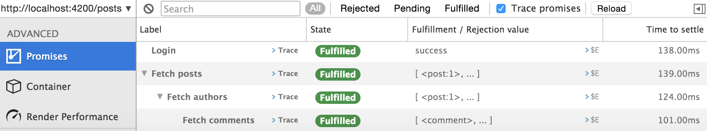
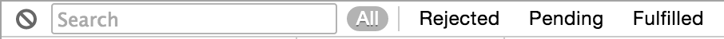
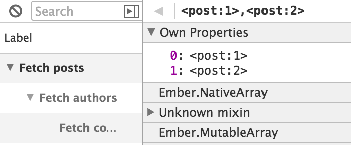
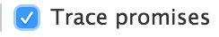

Debugging Promises 編集
The Inspector provides a way to look at all Promises created
in your application. Click on the Promises menu to start inspecting them.

You can see a hierarchical list of Promises with labels describing each Promise, its state, its settled value, and the time it took to settle.
Promise States and Filtering
Promises have different colors based on their state.

You can filter by clicking on the following pills: Rejected, Pending, Fulfilled.

You can also search for Promises by typing a query in the search box.
To clear the currently logged Promises, click on the clear icon on the top left of the tab.
Inspecting Settled Values
If the fulfillment value of a Promise is an Ember object or an array, you can click on that object to open it in the Object Inspector.

If the rejection value is an Error object, you can send its stack trace to
the console.

You can also click on the $E button to send the value to the console.
Tracing
The Inspector provides a way to view a Promise's stack trace.
Tracing Promises is disabled by default for performance reasons. To
enable tracing, check the Trace promise checkbox. You may want to
reload to trace existing Promises.

To trace a Promise, click on the Trace button next to the label,
which will send the Promise stack trace to the console.
Labeling Promises
Promises generated by Ember are all labeled by default. You can also label your own RSVP Promises to find them in the Inspector's Promises tab. All RSVP methods can take a label as the final argument.
1 2 3 4 5 6 7 8 9 10 11 12 13 14 15 16 17 18 19 |
let label = 'Find Posts' new RSVP.Promise(method, label); RSVP.Promise.resolve(value, label); RSVP.Promise.reject(reason, label); RSVP.Promise.all(array, label); RSVP.Promise.hash(hash, label); promise.then(success, failure, label); promise.catch(callback, label); promise.finally(callback, label); |